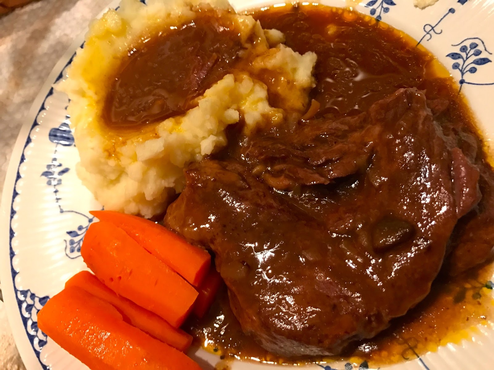

Golden Mushroom Beef

Description
Get rid of your crock pot, throw your pressure cooker and air fryer in the trash and go get a cast iron dutch oven.
Its about time you learned how to cook lazy using real kitchen tools and simple ass ingredients
Ingredients
- 3lbs of beef (you don't need to spend a lot here)
- 2 cans Golden Mushroom Soup
- 1 Envelope Onion Soup Mix
- 1 Bottle of red wine (go ahead and pour a glass)
Steps
- Salt/pepper/season the beef
- Brown the beef in the dutch oven on the stove top
- Remove from heat
- Add Soup and Soup Mix
- Add wine so the meat is almost covered, but don't drown it
- Cover the dutch oven
- Place in 300 degree oven for 2 1/2 - 3 hours
- Stick a fork in it, if its falling apart tender its done
Serve over Rice, or Potatoes, or Egg Noodles, or Biscuits